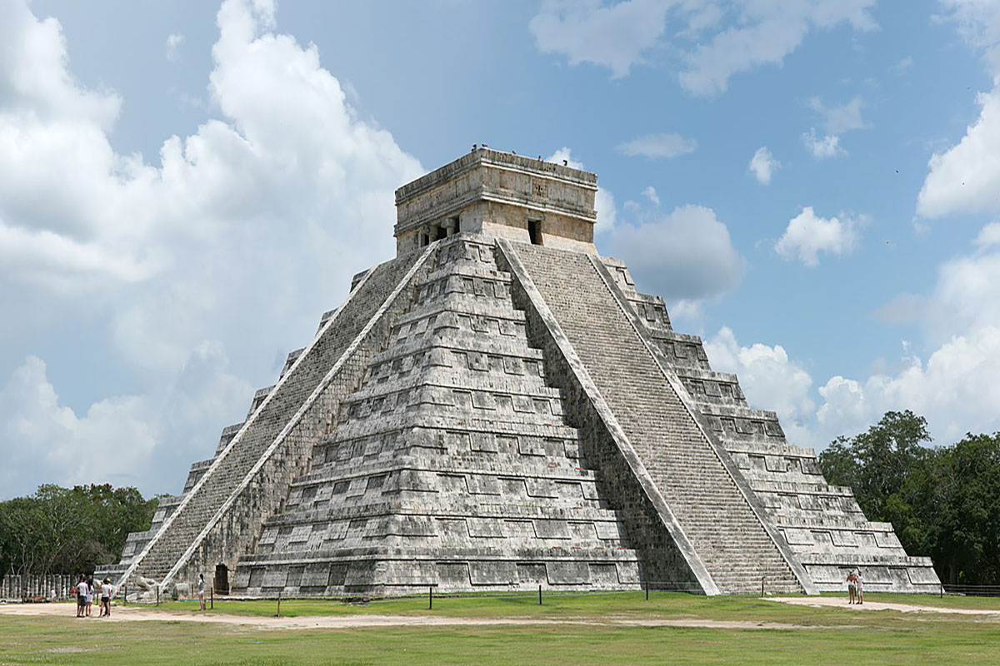

Chichén Itzá
Chichén Itzá to starożytne miasto Majów, które było ważnym ośrodkiem kulturowym i handlowym w dawnych czasach. Znajduje się w dżungli Jukatanu w Meksyku i posiada imponujące budowle, takie jak Piramida Kukulkána oraz boisko do gry w piłkę. To miejsce odgrywało istotną rolę w życiu religijnym i społecznym Majów, a dzisiaj przyciąga turystów ze względu na swoje historyczne znaczenie i architekturę.
Powrót do Menu
